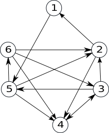

Grafuri Orientate
Definitii
Definiție. Se numeşte graf orientat sau digraf o pereche ordonată de mulțimi notată G=(V, U), unde:
- V este o mulțime finită şi nevidă ale cărei elemente se numesc noduri sau vârfuri;
- U este o mulțime de perechi ordonate de elemente distincte din V ale cărei elemente se numesc arce.

Notiuni
extremități ale unui arc: pentru arcul u=(x,y), se numesc extremități ale sale nodurile x şi y;
- x se numeşte extremitate inițială;
- y se numeşte extremitate finală;
- y se numește succesor al lui x;
- x se numește predecesor al lui y.
vârfuri adiacente: dacă într-un graf există arcul u=(x,y) (sau u=(y,x), sau amândouă), se spune despre nodurile x şi y că sunt adiacente;
incidență:
- dacă u1 şi u2 sunt două arce ale aceluiaşi graf, se numesc incidente dacă au o extremitate comună. Exemplu: u1=(x,y) şi u2=(y,z) sunt incidente;
- dacă u1=(x,y) este un arc într-un graf, se spune despre el şi nodul x, sau nodul y, că sunt incidente
Grade
Definiție. Fie G=(V, U) un graf orientat și x un nod al său.
- Se numeşte grad exterior al nodului x, numărul arcelor de forma (x,y) (adică numărul arcelor care ies din x), notat d+(x).
- Se numeşte grad interior al nodului x, numărul arcelor de forma (y,x) (adică numărul arcelor care intră în x), notat d-(x).
Teoremă: Într-un graf orientat, suma gradelor exterioare a tuturor nodurilor este egală cu suma gradelor interioare a tuturor nodurilor și cu numărul de arce.
Un nod x se numește izolat dacă d+(x)=d-(x)=0 (are gradul interior și gradul exterior egal cu 0).
Reprezentarea grafurilor orientate
Matricea de adiacență
Fie G=(V,U) un graf orientat cu n noduri, în care nu există mai multe arce de la un nod la altul. Matricea de adiacență a grafului este o matrice cu n linii și n coloane și elemente 0 sau 1, astfel:
- Ai,j=1 dacă există arcul (i,j)
- Ai,j=0 dacă există nu arcul (i,j)
Pentru graful acesta, matricea de adiacență este:
0 0 0 0 0 1
1 0 0 1 0 0
0 1 0 0 0 0
0 1 0 0 0 0
0 0 0 1 0 0
1 1 0 1 0 0
Observăm că matricea de adiacență:
- are zero pe diagonală (dacă în graf nu avem bucle)
- nu este simetrică față de diagonala principală
Pentru reprezentarea în memorie vom folosi un tablou bidimensional ale cărui dimensiuni sunt în concordanță cu numărul de noduri din graf.
Lista de arce
Lista de arce a unui graf orientat reprezintă o mulțime (familie, dacă arcele se pot repeta) ce conține toate arcele din graf.
Pentru graful acesta, lista de arce este:
U={(1,6),(2,1),(2,4),(3,2),(4,2),(5,4),(6,1),(6,4)}
Pentru reprezentarea în memorie putem folosi:
- un tablou unidimensional cu elemente de tip struct {int I,J;}
- două tablouri unidimensionale cu elemente de tip int
- o listă alocată dinamic
Listele de adiacență
Pentru un graf orientat cu G=(V,U) se va memora numărul de noduri n și apoi, pentru fiecare nod x, lista succesorilor lui x, adică nodurilor y cu proprietatea că există arcul (x,y).
Pentru graful alăturat, listele de adiacență sunt:
1: 6
2: 1 4
3: 2
4: 2
5: 4
6: 1 2 4
La reprezentarea în memorie trebui avut în vedere că dimensiunile listelor de succesori sunt variabile. De aceea, este neeficientă utilizarea unor tablouri alocate static. Astfel, putem folosi:
- un șir de n tablouri unidimensionale alocate dinamic;
- un șir de n vectori din STL;
- un șir de n liste simplu (dublu) înlănțuite alocate dinamic.
Graf partial. Subgraf.
Definiție. Fie G=(V, U) un graf orientat. Se numeşte graf parțial al grafului G, graful orientat G1=(V, U1), unde U1 ⊆ U.
Din definiție rezultă:
- Un graf parțial al unui graf orientat G=(V,U), are aceeaşi mulțime de vârfuri ca şi G, iar mulțimea arcelor este o submulțime a lui U sau chiar U.
- Fie G=(V, U) un graf orientat. Un graf parțial al grafului G, se obține păstrând vârfurile şi eliminând eventual nişte arce (se pot elimina şi toate arcele sau chiar nici unul).
Definiție. Fie G=(V, U) un graf orientat. Se numeşte subgraf al grafului G graful orientat G1=(V1,U1) unde V1 ⊆ V iar U1 conține toate arcele din U care au extremitățile în V1.
Din definiție rezultă:
- Fie G=(V,U) un graf orientat. Un subgraf al grafului G, se obține ştergând eventual anumite vârfuri şi odată cu acestea şi arcele care le admit ca extremitate (nu se pot şterge toate vârfurile deoarece s-ar obține un graf cu mulțimea vârfurilor vidă).
Graful initial
Graful partial
Subgraf

Graf complet. Graf turneu.
Definiție. Fie G=(V, U) un graf orientat. Graful G se numește graf complet dacă oricare două vârfuri distincte ale sale sunt adiacente.
Două vârfuri x și y sunt adiacente dacă:
- între ele există arcul (x,y), sau
- între ele există arcul (y,x), sau
- între ele există arcele (x,y) şi (y,x).
Teoremă: Numărul de grafuri orientate complete cu n noduri este 3n*(n-1)/2.
Definiție: Un graf orientat este turneu, dacă oricare ar fi două vârfuri i şi j, i≠j, între ele există un singur arc: arcul (i,j) sau arcul (j,i).

Propietati
- Orice graf turneu este graf complet.
- Avem 2n*(n-1)/2 grafuri turneu cu n noduri.
- În orice graf turneu există un drum elementar care trece prin toate vârfurile grafului.
Conexitate
Lant. Drum.
Definiție: Fie G=(V, U) un graf orientat. Se numește lanț, în graful G, o succesiune de arce, notată L = (u1 , u2 ,..., uk) cu proprietatea ca oricare două arce consecutive au o extremitate comună (nu are importanță orientarea arcelor).
Definiție: Fie G=(V, U) un graf orientat. Se numește lanț, în graful G, o succesiune de noduri, notată L = (x1 , x2 ,..., xp) cu proprietatea ca oricare două noduri consecutive sunt adiacente.
Lungimea unui lanț este egală cu numărul de arce din care este alcătuit.
Primul nod și ultimul nod dintr-un lanț formează extremitățile lanțului.
Definiție. Fie G=(V, U) un graf orientat. Se numește drum în graful G o succesiune de noduri, notată D = (x1 , x2 ,..., xk), cu proprietatea că pentru orice 1≤i < k, (xi,xi+1) este arc în G.
Lungimea unui drum este egală cu numărul de arce din care este alcătuit.
Pentru un drum D = (x1 , x2 ,..., xk), nodurile x1 și xk reprezintă extremitățile – inițială, respectiv finală.
Un lanț (drum) se numește elementar dacă în el nu se repetă noduri. Un lanț (drum) se numește simplu dacă în el nu se repetă arce.
Exemple În acest graf:
- L=(5,4,2,6,1) este un lanț elementar, dar nu este drum.
- D=(3,2,1,6,4) este drum elementar.
- D=(3,2,1,6,2,4) este drum neelementar, dar simplu.
Circuit
Definiție: Se numește circuit un drum simplu în care extremitatea inițială și finală sunt egale. Se numește circuit elementar un circuit în care, cu excepția extremităților, nu se repetă noduri.
Lungimea unui circuit este reprezentată de numărul de arce din care acesta este alcătuit.
Exemple În acest graf:
- (1,6,2,1) și (1,6,4,2,1) sunt circuite elementare.
Conexitate. Tare conexitate
Definiții: Fie G=(V,U) un graf orientat.
Graful se numește conex dacă între oricare două noduri distincte există cel puțin un lanț.
Se numește componentă conexă un subgraf conex și maximal cu această calitate – dacă am mai adauga un nod, n-ar mai fi conex.
Graful se numește tare conex dacă între oricare două noduri distincte există cel puțin un drum.
Se numește componentă tare conexă un subgraf tare conex și maximal cu această calitate – dacă am mai adauga un nod, n-ar mai fi tare conex.
Graf hamiltonian. Graf eulerian
Definiții: Fie un graf orientat G=(V,U).
Un drum elementar care conține toate nodurile grafului se numește drum hamiltonian.
Un circuit elementar care conține toate nodurile grafului se numește circuit hamiltonian.
Un graf care conține un circuit hamiltonian se numește graf hamiltonian.
Exemplu: Graful orientat desenat mai jos este hamiltonian, deoarece con ține circuitul hamiltonian (2, 1, 5 , 6, 4, 3, 2).
Definiții: Fie un graf orientat G=(V,U).
Un circuit care conține toate arcele grafului se numește circuit eulerian.
Un graf care conține un circuit eulerian se numește graf eulerian.
Teoremă: Un graf fără noduri izolate este eulerian dacă și numai dacă este conex și pentru fiecare nod, gradul interior este egal cu cel exterior.
Exemplu: Graful orientat de mai jos este eulerian.